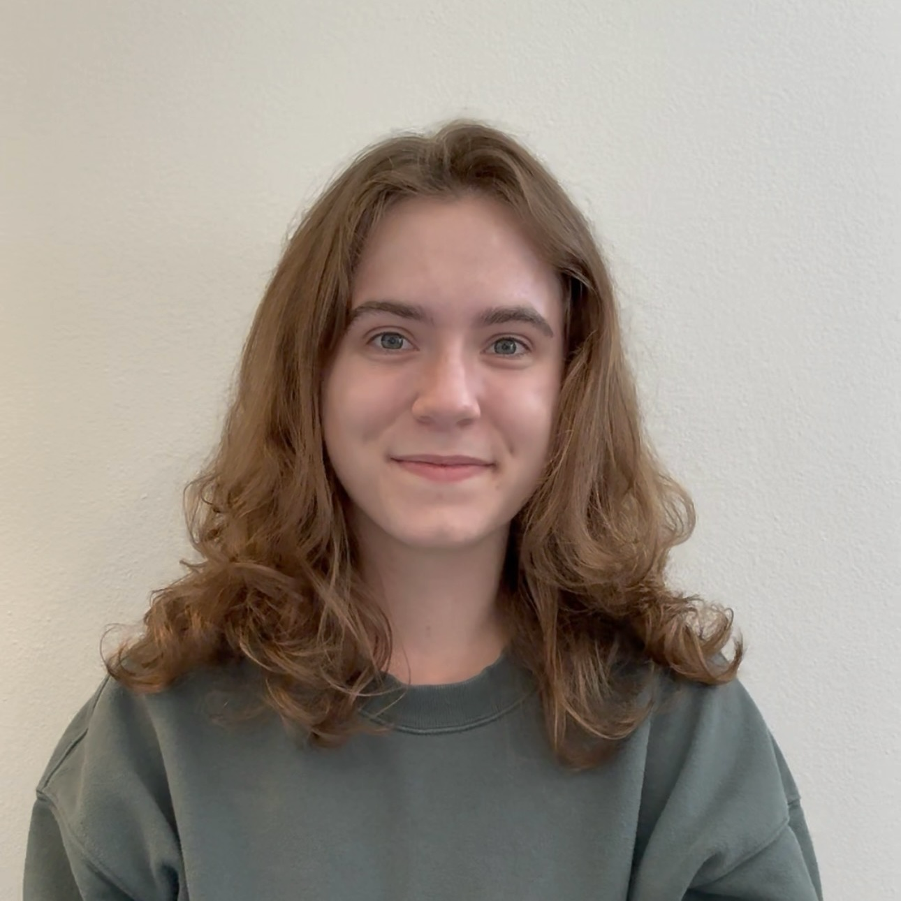
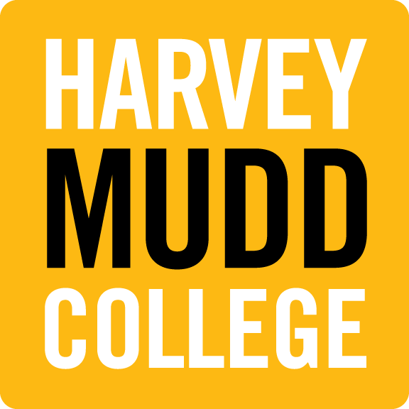
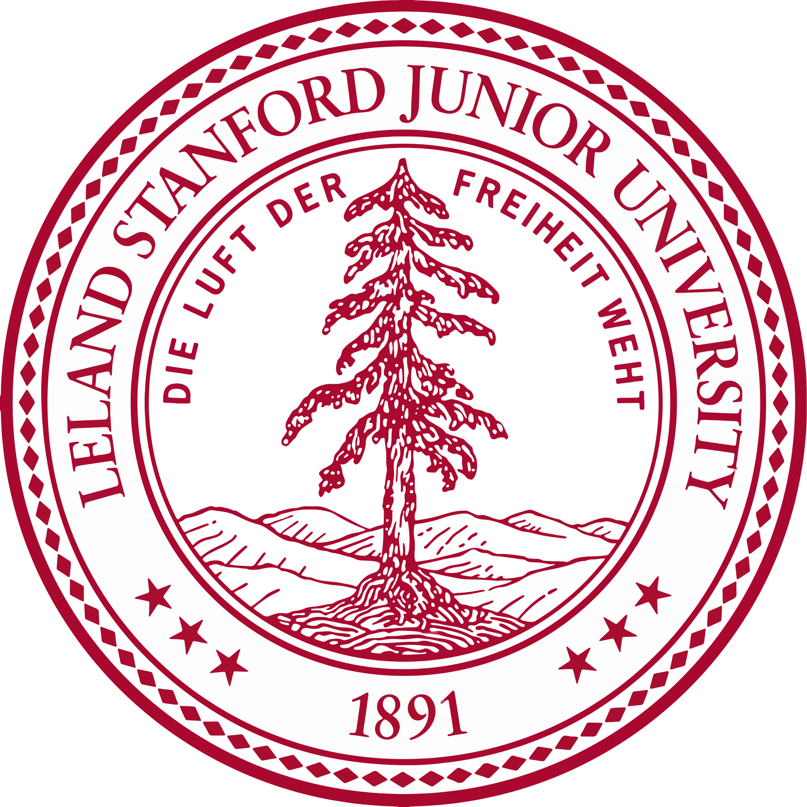

|
I am a 3rd year Computer Science PhD student in the University of Southern California Viterbi School of Engineering. I work with Professor Maja Matarić in the Interaction Lab. My PhD research is supported by the NIH grant R01MH139134. My work sits at the intersection of natural language processing, machine learning, and robotics. I am particularly interested in exploring how technology can be used to help people understand and improve their learning experiences. Predictably, I am also passionate about teaching, and hope to work toward making computing education an inclusive, universal experience. I received my bachelors degree in Computer Science from Harvey Mudd College in 2024. At Mudd, I worked with Professor Jim Boerkoel in the Human Experience and Agent Teamwork Laboratory (HEATlab) on understanding the fluency of human-robot teams in shared-workspace tasks. Email: emilymwe@usc.edu Papers Teaching Current Projects Education Experience Honors |
 |
|
|
|
[1]
Deuksin Kwon, Emily Weiss, Tara Kulshrestha, Kushal Chawla, Gale Lucas, Jonathan Gratch Findings of the Association for Computational Linguistics: EMNLP 2024 Paper |
|
[2]
Julie Medero, Mark Atuhaire, Colleen Coxe, Manzi Kagina, Maria Assumpta Komugabe, Takako Mino, Abby Tiller, Emily Weiss Capstone Design Conference 2026 Paper |
|
|
- CS Curricular Design Assistant: Harvey Mudd Department of Computer Science (Summer 2024). Contributed to the redesign of CSCI 60, Principles of Computer Science for Fall 2024.
- Grader/Tutor: Harvey Mudd CSCI 60, Principles of Computer Science (Summer 2024)
- CS Curricular Design Assistant: Harvey Mudd College and Musizi University (Kampala, Uganda) (August 2023 to May 2024). Contributed to the curriculum design of 6 first-year courses in Musizi's Software Engineering program for my capstone clinic project.
- Grader/Tutor: Harvey Mudd CSCI 131, Programming Languages (August 2023 to May 2024)
- Head Grader/Tutor: Harvey Mudd CSCI 60, Principles of Computer Science (August 2022 to May 2023)
- Grader/Tutor: Harvey Mudd CSCI 60, Principles of Computer Science (August 2021 to May 2022)
|
|
- I am a graduate research assistant on the Socially Assistive Robots for Personalized Cognitive Behavioral Therapy project. This research is supported by the NIH grant R01MH139134, SCH: Personalized AI-Driven Models for Supporting User Engagement and Adherence in Health Interventions: Validation in Cognitive Behavioral Therapy for Anxiety.
- My primary research direction is on Socially Assistive Robots for Facilitating Self-Reflection. This research is supported by the NIH grant R01MH139134.
|
|



|
|
- I worked on the MAD About Fluency project in the Human Experience & Agent Teamwork Laboratory @ Harvey Mudd (HEATlab) under the mentorship of Professor Jim Boerkoel from 2022 to 2024.
- I was a REU Intern at the University of Southern California Institute for Creative Technologies (ICT) in Summer 2023. I worked under the mentorship of Professor Gale Lucas and my PhD mentor Kushal Chawla.
|
|
- University of Southern California, Viterbi Graduate School Fellowship, 2024
- Graduated with High Distinction, Harvey Mudd College, 2024
- Graduated with Departmental Honors in Computer Science, Harvey Mudd College, 2024
- Graduated with Departmental Honors in Humanities, Social Science, and Art, Harvey Mudd College, 2024
|
last updated on June 20, 2026 |